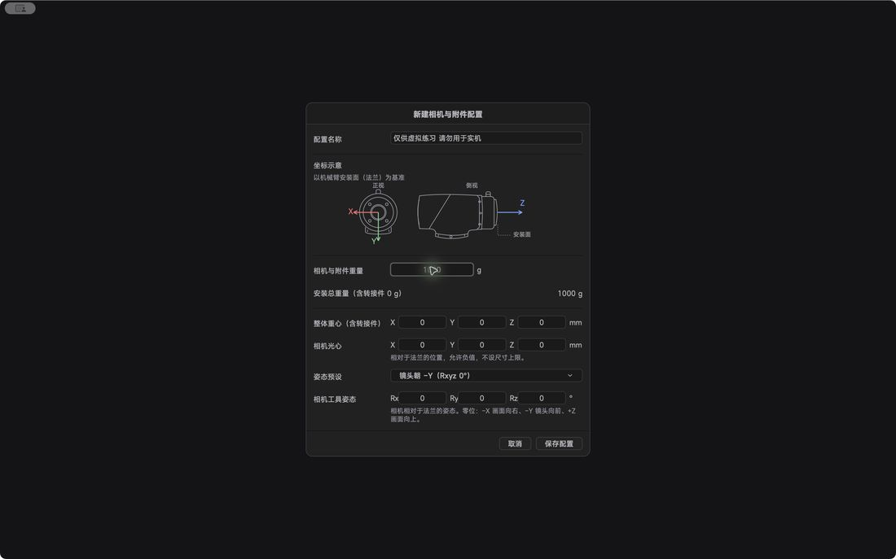

功能详解 / 负载与相机工具：先填对数据，再谈精度
负载与相机工具：先填对数据，再谈精度
同一台机械臂带不同负载，表现会变。软件把这件事做成配置。
四类数据负载重量、重心、相机与镜头基本参数、夹具信息 —— 先填对，路径和速度才有意义。
多套配置可新建、选择、复制、编辑、删除，按现场换机不换项目。
Nova5 空法兰基线Nova5 提供空法兰基准配置，从零搭负载时以此为起点。
带载自动辨识装上实际负载后做一次辨识，让软件按真实惯性参数计算，而不是套标称值。
转接件重量偏好设置里可登记转接件并保存，参与负载计算。
相机调平配合数字输入把相机调到水平，横滚和俯仰在界面上可读。

本页内容来自 CineArm v0.1.46 的软件行为。